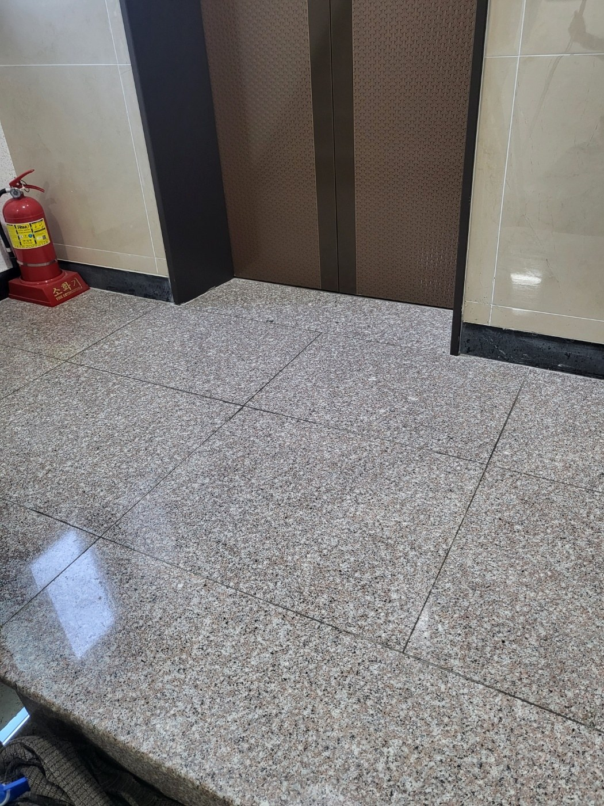
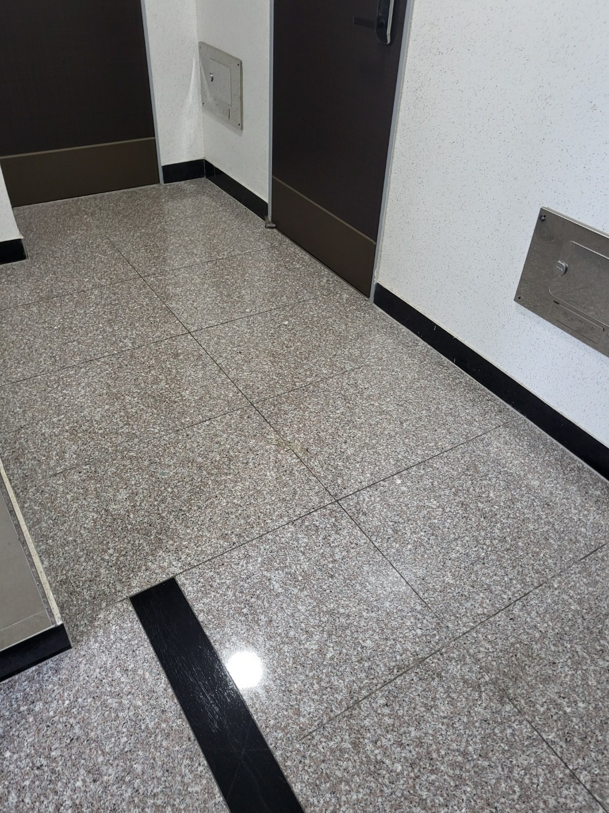
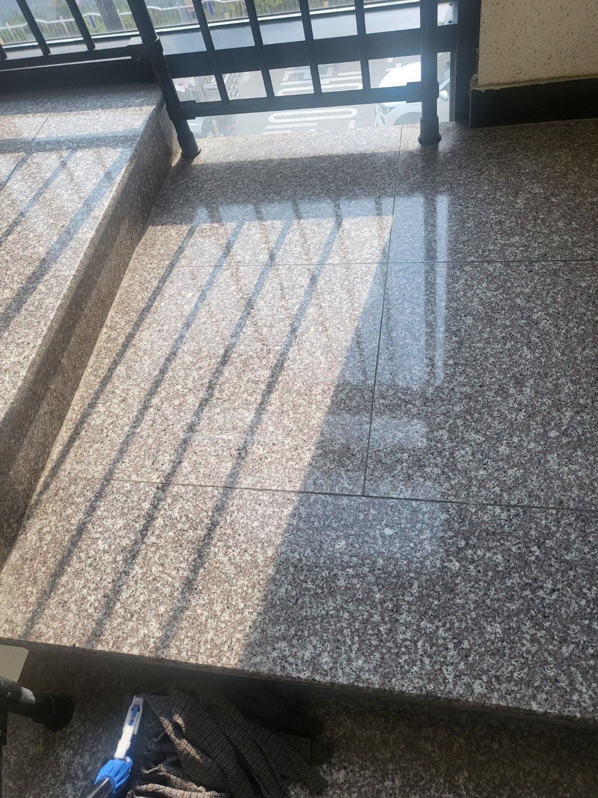
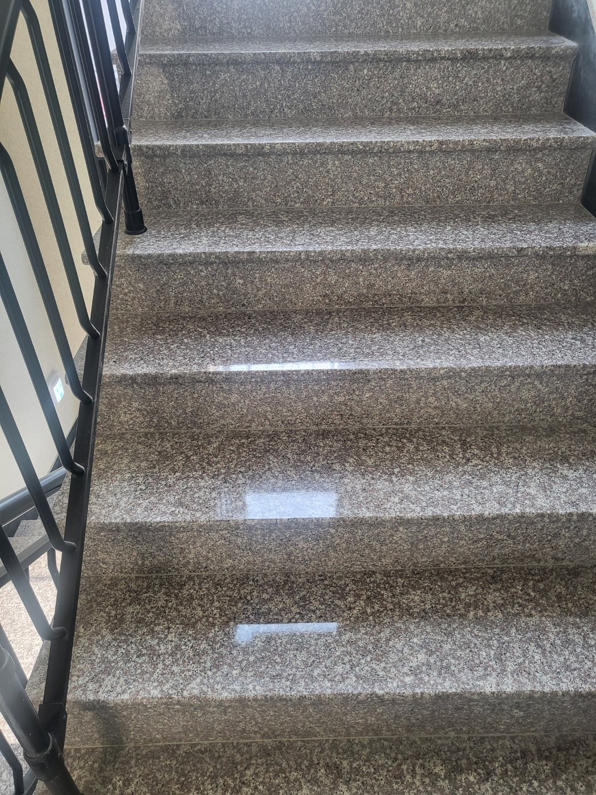
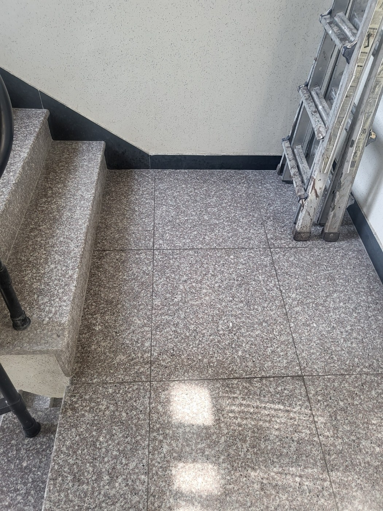
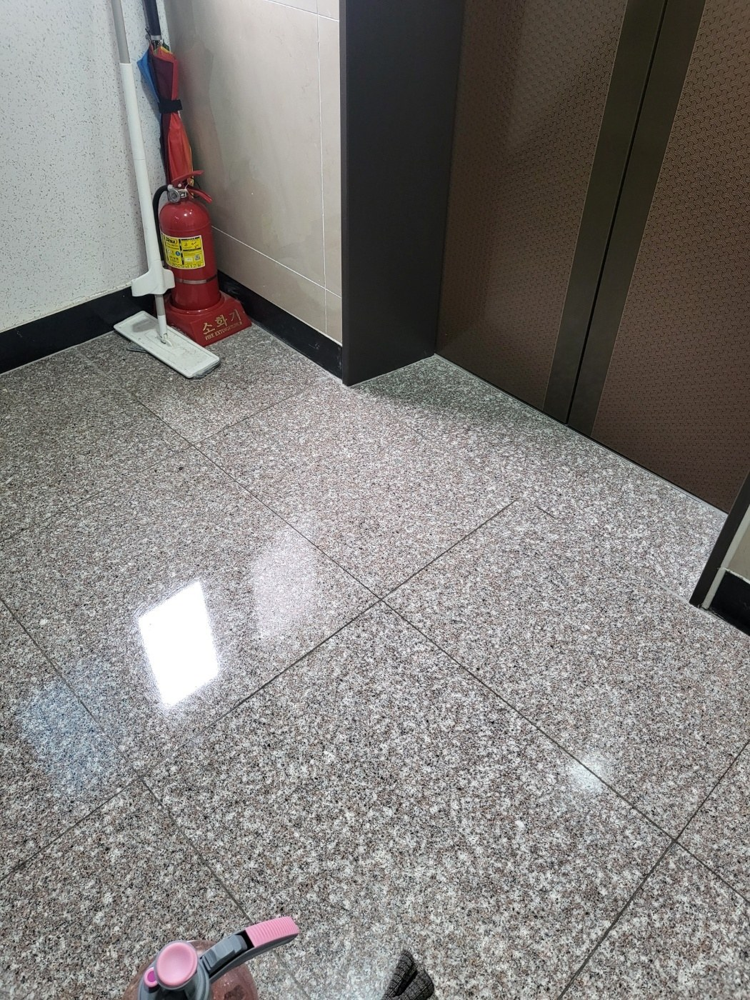

엘리베이터 앞 바닥은 반복 오염을 먼저 봅니다
엘리베이터 문 앞은 대기 인원이 모이는 구역이라 발자국과 미세먼지가 집중됩니다. 모서리의 먼지를 먼저 제거하고 넓은 면을 고르게 닦아야 얼룩이 덜 남습니다. 석재 바닥은 광택과 세제 자국을 함께 확인하며 마감합니다.

복도는 벽면 가장자리까지 이어서 관리합니다
복도 중앙보다 벽면 쪽과 출입문 주변에 먼지가 모이는 경우가 많습니다. 통행을 방해하지 않도록 구역을 나누어 청소하고, 문 앞에는 물기가 오래 남지 않도록 마무리합니다. 바닥 재질에 따라 세정 강도도 달리 적용합니다.

계단참은 코너 오염이 눈에 잘 띕니다
계단참은 평평해 보이지만 벽면과 난간 기둥 주변에 먼지가 쌓이기 쉽습니다. 모서리 오염을 제거한 뒤 넓은 면을 정리하면 전체 밝기가 고르게 보입니다. 층별로 동일한 기준을 적용하는 것이 중요합니다.

계단 디딤판은 한 칸씩 상태를 확인합니다
계단은 한 번에 밀대질하기보다 디딤판마다 모래와 먼지를 제거하고 오염이 심한 부분을 따로 정리합니다. 특히 계단 코의 검은 자국은 반복 통행으로 생기기 쉬워 정기적인 관리가 필요합니다. 마감 후 미끄러움이 없도록 확인합니다.

보이지 않는 코너가 전체 청결도를 좌우합니다
계단 아래쪽과 코너는 청소도구가 닿기 어려워 먼지가 오래 남기 쉽습니다. 이런 부분을 주기적으로 정리하면 건물 전체가 오래된 느낌을 덜 주고 관리 상태가 안정적으로 유지됩니다. 난간 기둥 주변도 함께 확인합니다.

바닥 광택보다 중요한 것은 균일한 마감입니다
청소 후 특정 부분만 번들거리거나 세제 자국이 남으면 오히려 지저분하게 보일 수 있습니다. 전체 면의 수분과 얼룩을 고르게 정리하고, 출입문과 엘리베이터 경계부까지 확인해 마무리합니다. 이용객이 바로 지나가도 불편하지 않도록 건조 상태를 체크합니다.
양산 증산 상가청소는 공용부와 업종 특성을 함께 봅니다
병원과 학원, 사무실, 카페가 함께 있는 상가는 시간대별 유동인구가 다릅니다. 퍼펙트케어는 건물 운영시간과 방문객 수, 바닥오염, 화장실 사용량을 확인해 관리 구역과 작업시간을 조정합니다.
일회성 대청소와 정기청소를 구분해서 안내합니다
오랫동안 쌓인 오염을 한 번 정리해야 하는 현장은 대청소가 적합하고, 이미 기본 상태가 잡혀 있는 건물은 정기청소로 유지하는 편이 효율적입니다. 무료 방문견적에서 현재 상태를 확인한 뒤 필요한 방식으로 안내합니다.
현장에 맞춘 무료 방문견적
정기청소와 상가·사무실·화장실 청소는 공간 크기만으로 동일한 견적을 내기 어렵습니다. 퍼펙트케어는 현장의 이용량, 바닥 재질, 오염도, 관리 범위를 확인한 뒤 필요한 작업을 안내합니다.